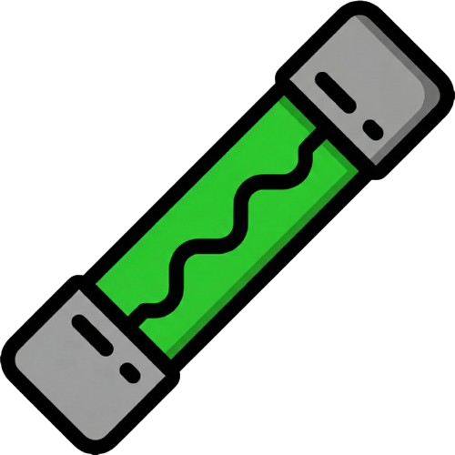
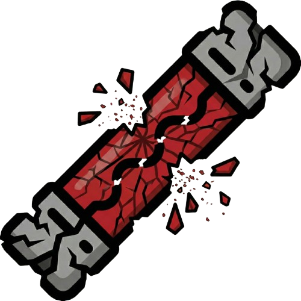

Enunciado del Problema:
"Suponga que tenemos una caja de fusibles que contiene 20 unidades, de las cuales 15 están en buen estado y 5 defectuosos. Si se seleccionan 2 fusibles al azar y se retiran de la caja, uno después de otro, sin reemplazar el primero, ¿cuáles son las probabilidades para esos 2 fusibles?"
1. Configuración de la Caja
Arrastra fusibles a la caja o usa los controles manuales.

Buen Estado
DefectuosoEdición Manual
15
5
2. Simulador
Total: 20 (Buenos: 15, Malos: 5)
Resultado de Extracción:
?
?
3. Análisis Matemático
Tema: Probabilidad de Eventos Dependientes (Extracción sin reemplazo)
Donde los fusibles totales \(N=\) 20, los fusibles en buen estado \(B=\) 15, y los fusibles defectuosos \(D=\) 5.
Ambos Defectuosos (D, D)
$$ \frac{D}{N} \cdot \frac{D-1}{N-1} $$
$$ \frac{5}{20} \cdot \frac{4}{19} $$
= 0.0526 = 5.26%
Ambos Buenos (B, B)
$$ \frac{B}{N} \cdot \frac{B-1}{N-1} $$
$$ \frac{15}{20} \cdot \frac{14}{19} $$
= 0.5526 = 55.26%
Uno y Uno (B,D) o (D,B)
$$ \left(\frac{B}{N} \cdot \frac{D}{N-1}\right) + \left(\frac{D}{N} \cdot \frac{B}{N-1}\right) $$
$$ \left(\frac{15}{20} \cdot \frac{5}{19}\right) + \left(\frac{5}{20} \cdot \frac{15}{19}\right) $$
= 0.3947 = 39.47%